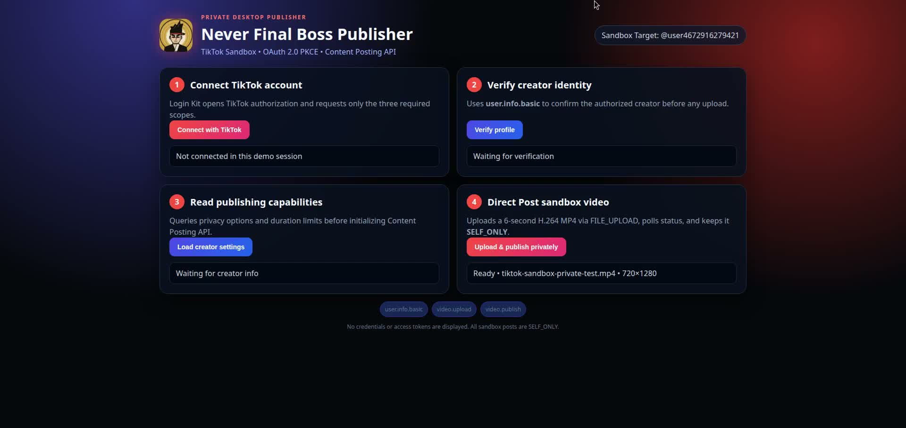

Account authorization
Opens TikTok Login Kit, requests the minimum selected scopes, and returns through a local desktop callback.
Never Final Boss Publisher is the production publishing application used by the creator of Never Final Boss to authorize the correct TikTok account, validate posting capabilities, upload finished vertical videos, and read back publication status.
The application supports the final operational stage of the Never Final Boss production pipeline. It does not generate videos or collect public-user content. It works only with the creator's finished, rights-controlled media and an explicitly authorized creator account.
Opens TikTok Login Kit, requests the minimum selected scopes, and returns through a local desktop callback.
Reads the authorized creator's basic profile so the operator can confirm the destination before any upload.
Reads creator posting information, available privacy options, and platform restrictions before creating a post.
Validates the selected MP4, title, duration, dimensions, publication state, and exact source before transfer.
Uses TikTok's Content Posting API to upload an editable draft or, when approved and selected, publish to the authorized profile.
Tracks processing and records the returned publication identifier, preventing blind retries and accidental duplicates.
The desktop interface exposes each TikTok integration step separately: authorization, identity verification, capability discovery, and controlled posting. The same interface is shown in the production-review demonstration supplied with the app submission.

Each requested scope maps to a visible product function. Authorization is initiated by the creator and can be revoked through TikTok account settings.
user.info.basicConfirms the display name, avatar, and Open ID of the creator who authorized the desktop application.
video.uploadUploads a completed video as a TikTok draft so the authorized creator can make final edits and publish in TikTok.
video.publishCreates a post on the authorized creator's profile only after creator selection, capability checks, and explicit publication action.
Completes OAuth through a loopback redirect on the creator's own computer. The callback is not a public account or login page.
The application runs locally on the channel owner's protected Linux workstation. Authorization tokens are kept in protected local storage, are never embedded in this website or public repository, and are used only for requested TikTok publishing operations.
There is no public sign-up, subscription, advertising profile, or user-generated-content intake.
Profile and authorization data are not sold, used for advertising, or disclosed to unrelated third parties.
The creator selects every source file and destination action and may revoke TikTok access or delete local credentials.
Questions about the product, privacy, or requested TikTok permissions can be submitted through the public repository issue tracker. Policy documents are available without authentication.